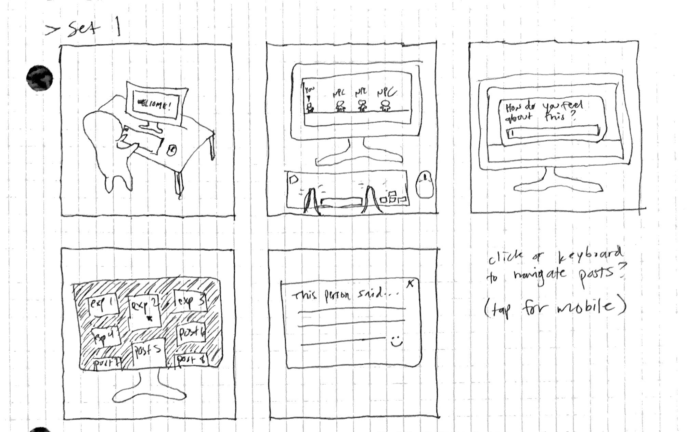
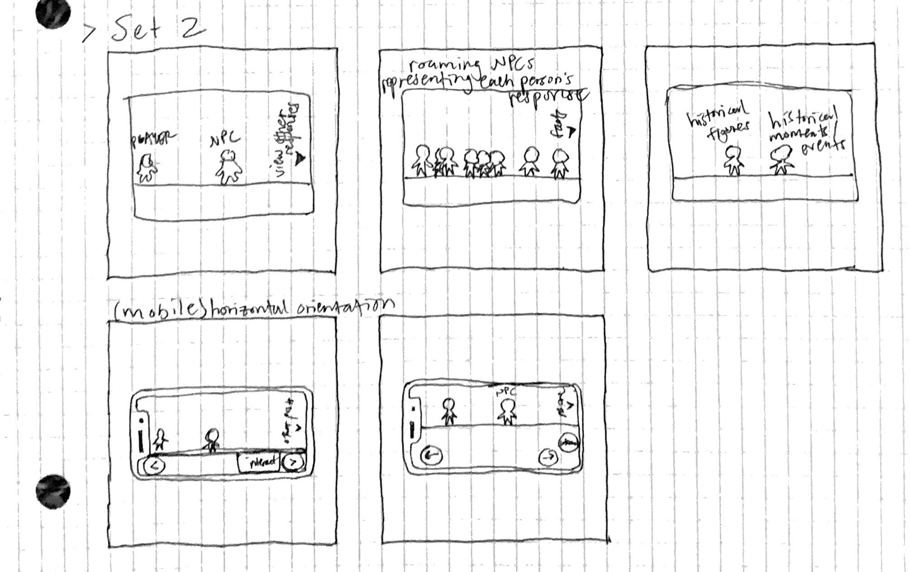

From my first storyboard, initially I was thinking about having an NPC serve as a directory for the collection of responses/posts that are inputted from users. However, Leon suggested that I could put one NPC on the screen for each response. At first I was skeptical because it sounds like it would just lead to a cluttered screen and I wasn't sure how I could incorporate my other NPCs on the screen, but then I thought about the possibility of creating multiple screens.
So, in my second storyboard, I tried to portray the use of different screens. The first screen would have the NPC that asks the user to input their own answer to a question (or several questions). Then the next screen, which would be accessible if/when the player moves the character all the way to the right of the screen, would have a bunch of NPCs that represent each response / post. On this page, I could also present an option in the form of an icon at the top right (I forgot to include this in my drawing) that would allow the user to view all of the posts/responses in a grid layout (possibly made with the help of the Masonry library). The final screen could have NPCs that provide the user with fun facts regarding historical figures and/or events.
